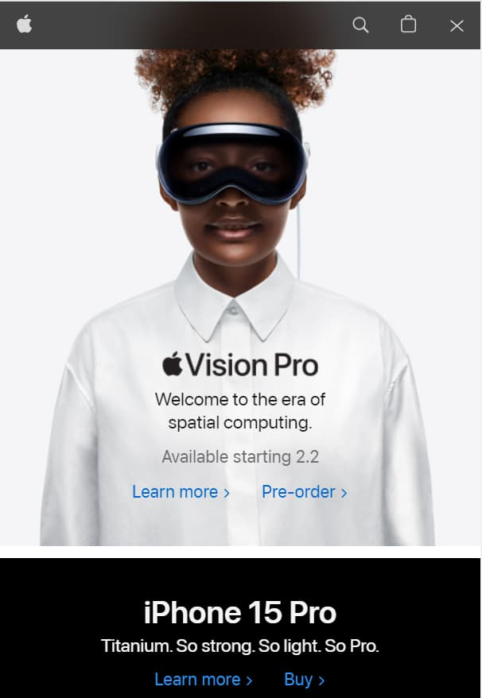
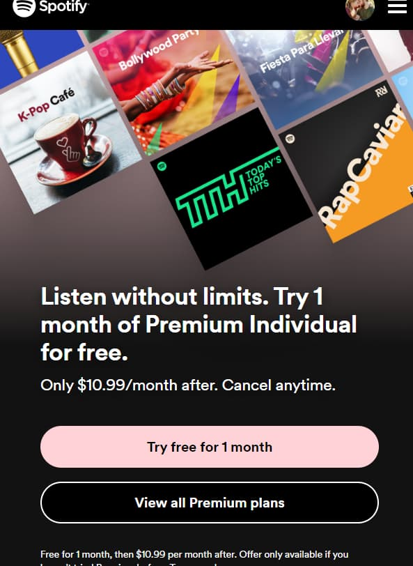
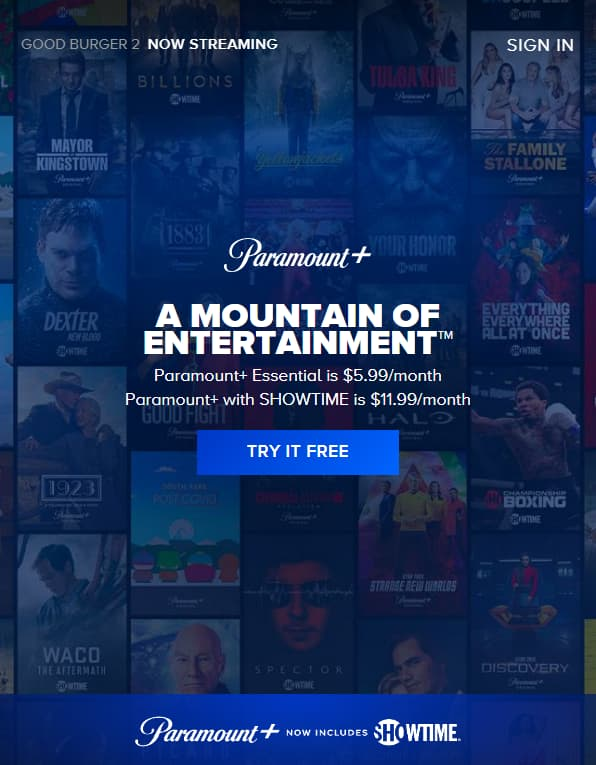

Contrast
Apple
https://www.apple.com/ The Apple home page is a good example of how to use contrast to capture the user's attention. The top picture is mostly white with the words in black and then below it is a black background with white words.
Visual Heirarchy
Spotify
https://www.spotify.com/us/premium/ The Spotify premium page is a good example of visual heirarchy because it shows you the different pages that you will have access too in the photo on the top, then it uses contrast to grab ypur attention to the words. Then the button to try premium is in a light pink color to focus the user
Hick's Law
Paramount Plus
https://www.paramountplus.com/ This website demonstrates Hick's law by only providing a few options for the user when they get to the page. The main thing that you want to do is try it for free. You do not need to make the decision on what plan to go with or anything yet.